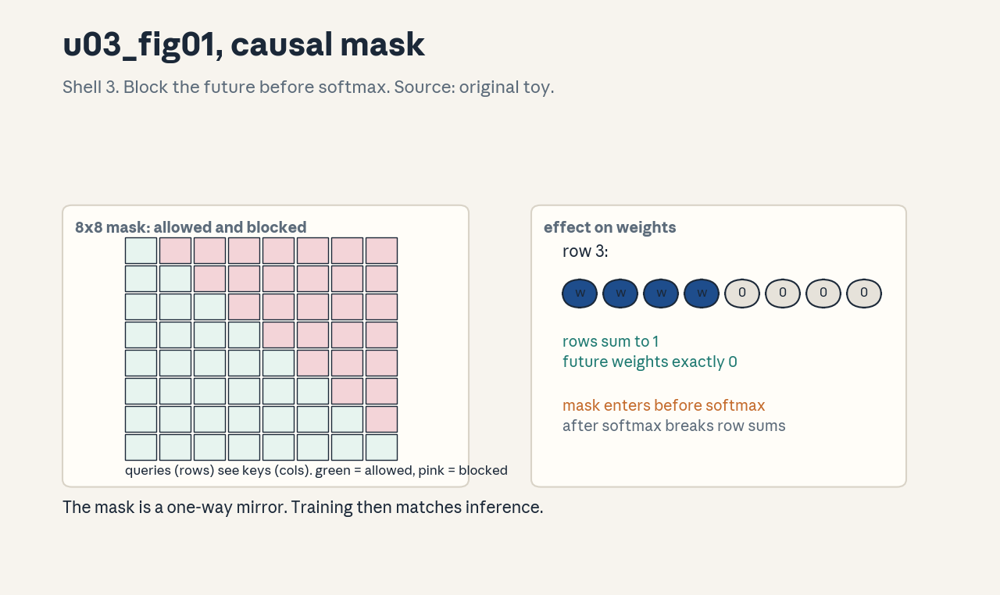
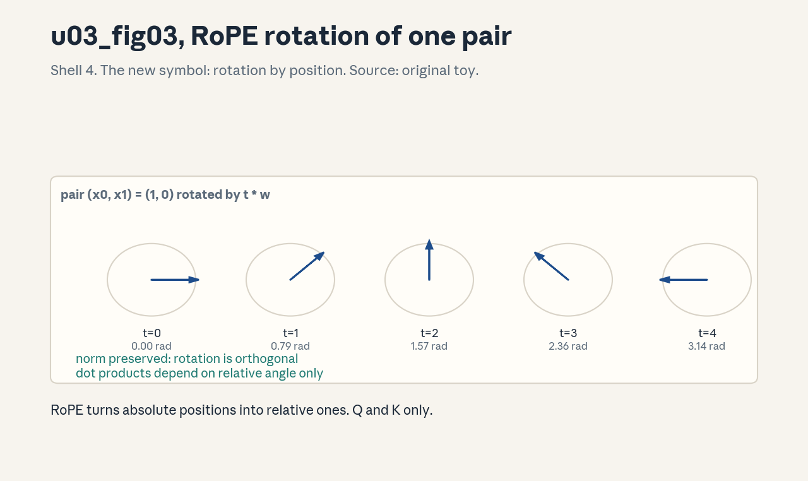

U03 · Transformer block mechanics
U03 , Transformer block mechanics
Prerequisites: P05, P11, P12, P14. Bridge links in ../prerequisites.md.
Session: S03 (reported: Apr 6, Architectures, Hyperparameters).
Claim class: REQUESTED-BRANCH. All leaves PLANNED / SOURCE ATTRIBUTION
PENDING. Notation: see ../notation_and_shapes.md.
Local remediation , the block in one paragraph
Read this if diagnostic item D9 was not full marks. A transformer block
maps (B,T,d) to (B,T,d). It has two sub-blocks, each wrapped as
x + subblock(norm(x)): first multi-head causal self-attention, then a
position-wise feedforward network. Attention lets each position mix
information from earlier positions, the FFN transforms each position
independently, residuals and norms keep gradients flowing through L
stacked blocks. The reference implementation lives in
assets/compute_u03.py and every number below comes from running it.
Worked check: with B=2, T=8, d=16, h=4, dff=32, V=64, the block maps
(2,8,16) to (2,8,16), attention weights sum to 1 per row (max dev
2.22e-16), future weights are exactly 0, and RMSNorm outputs have row
rms 0.9999 to 1.0000. Assessment: change T to 4 and predict every
shape before running. Key: ../keys/u03_answers.md R1.
C01: Embedding lookup
Leaf id cs336-U03-C01. Claim class REQUESTED-BRANCH.
Status PLANNED / SOURCE ATTRIBUTION PENDING.
-
Source mapping, scope, objectives, dependencies. S03. Scope: from token ids to vectors. Objectives: implement lookup, state its shapes, parameter count, and gradient sparsity. Depends on P11, P13.
-
Motivating question and toy. Question: where do token meanings come from? Toy: E has shape (64,16), ids [[3, 17]] give E[[3,17]] with shape (1,2,16). Each row of E is a learned vector, lookup is an index operation, not computation.
-
Mental model. The embedding table is a dictionary from id to vector. The model learns the vectors by gradient descent. Lookup costs no FLOPs, it costs memory traffic (one row per token).
-
Objects, symbols, units, shapes, assumptions. E: (V,d). ids: (B,T) int. Output: (B,T,d). Assumption: ids are in [0,V), out-of-range ids are a bug, not a feature.
-
Derivation / mechanism. y[b,t,:] = E[ids[b,t],:]. The gradient wrt E is sparse: only rows that appeared in the batch get updates. Parameter count Vd (here 6416 = 1024).
-
Computed example. From
assets/compute_u03.py(executed 2026-10-06): lookup on (2,8) ids gives (2,8,16), the full block output keeps that shape through to logits (2,8,64). -
Algorithm and reference implementation.
embed(ids, E): return E[ids] with a range assert on ids. Three lines. -
Correctness checks and expected output. Shape assert, id 0 maps to row 0, out-of-range id raises. Expected outputs in the lab key.
-
Costs. Memory Vdbytes, traffic BTd*bytes per forward. Negligible FLOPs. The table is often the largest single matrix for large V.
-
Nearest alternative and selection boundary. Hashed or factorized embeddings for huge V, one-hot times E is the same math, never the implementation. Keep the table for standard models.
-
Failure case and counterexample. An id of V (off by one from a bad shift) indexes out of bounds or wraps silently depending on the framework. The assumption “ids are valid” breaks at data pipeline bugs, the range assert is the backstop.
-
Research reading and falsifiable extension. Reading: the original transformer paper’s embedding description (primary: paper text). Extension: measure row-update frequency across training, hypothesis: a Zipfian skew with most updates on few rows.
-
Assessment. (a) Recall: shapes in and out, param count. (b) Oral ladder: define lookup, hand-index a (2,3) id matrix, justify zero FLOPs, implement with assert, compare with one-hot, debug the off-by-one id, critique the valid-id assumption, design the skew experiment. (c) Transfer: V doubles. Which ledger row moves, and by how much? Answers:
../keys/u03_answers.mdA1. -
Lab and exercises. Lab U03 task 1 implements lookup and the range assert. See
../labs/u03_lab.md. -
Visuals. Audit row: the lookup diagram (ids -> rows). The block figure (u03_fig02) shows where lookup sits.
C02: Q/K/V projections
Leaf id cs336-U03-C02. Claim class REQUESTED-BRANCH.
Status PLANNED / SOURCE ATTRIBUTION PENDING.
-
Source mapping, scope, objectives, dependencies. S03. Scope: the three linear maps that start attention. Objectives: state shapes and FLOP cost, explain why three separate maps exist. Depends on C01, U02-C06.
-
Motivating question and toy. Question: why three matrices for one input? Toy: x (2,8,16) times Wq, Wk, Wv (each 16x16) gives q, k, v each (2,8,16). Queries ask, keys advertise, values carry content, one shared map could not learn the three roles.
-
Mental model. Three learned lenses on the same input. The attention score compares a query lens against key lenses, the values are what actually get mixed. Separate parameters let each role specialize.
-
Objects, symbols, units, shapes, assumptions. Wq,Wk,Wv: (d,d). q,k,v: (B,T,d), later reshaped per head. FLOP cost 32BTd*d. Assumption: dense maps, structured variants are U04.
-
Derivation / mechanism. q = xWq etc. are linear maps, no nonlinearity. The reshape to (B,h,T,dh) splits the d axis into h heads (C05). Gradients flow to each W independently.
-
Computed example. From
assets/compute_u03.py(executed 2026-10-06): the toy block’s QKV cost is 322816*16 = 24576 FLOP, matching the U02 formula, Wq std 0.2549 versus Xavier target 0.2500. -
Algorithm and reference implementation.
qkv(x, Wq, Wk, Wv): three matmuls with shape asserts. Five lines. -
Correctness checks and expected output. Shapes (B,T,d) each, against a fused single-matmul reference: allclose. Expected outputs in the lab key.
-
Costs. 3 of the 4 attention matmuls’ FLOPs, 3d^2 parameters. Fusing the three into one matmul saves launch overhead (U07).
-
Nearest alternative and selection boundary. Fused QKV (one (d,3d) map, then split), MQA/GQA shrink K/V heads (U04). Fuse for speed, keep separate for clarity in teaching code.
-
Failure case and counterexample. Tying Wq = Wk (shared map): scores become symmetric similarities and the model loses the ask/advertise asymmetry, some heads need it. The assumption “three roles need three maps” is load-bearing for expressivity.
-
Research reading and falsifiable extension. Reading: attention mechanism ablations (primary: paper ablations). Extension: tie Wq=Wk in the toy and compare loss, hypothesis: loss rises.
-
Assessment. (a) Recall: shapes, count, cost. (b) Oral ladder: define each role, compute the toy FLOP count by hand, justify three maps, implement qkv, compare fused versus separate, debug a shared Wq/Wk, critique the dense assumption, design the tying experiment. (c) Transfer: d doubles. Which term grows fastest in the block? Answers:
../keys/u03_answers.mdA2. -
Lab and exercises. Lab U03 task 2 implements qkv and the fused comparison. See
../labs/u03_lab.md. -
Visuals. Audit row: the three-map diagram. The block figure (u03_fig02) reuses it.
C03: Scaled softmax attention
Leaf id cs336-U03-C03. Claim class REQUESTED-BRANCH.
Status PLANNED / SOURCE ATTRIBUTION PENDING.
-
Source mapping, scope, objectives, dependencies. S03. Scope: the attention operation itself. Objectives: derive the formula, explain the scale, verify the row-sum invariant. Depends on C02, P06.
-
Motivating question and toy. Question: how does a position choose what to read? Toy: scores S = QK^T/sqrt(dh), weights P = softmax(S), output = PV. From the run: rows sum to 1 with max deviation 2.22e-16.
-
Mental model. Each query scores every key by dot product, softmax turns scores into a probability distribution, the output is the expected value under that distribution. Attention is differentiable dictionary lookup with learned keys.
-
Objects, symbols, units, shapes, assumptions. S,P: (B,h,T,T). Scale 1/sqrt(dh): unit none. Assumption: keys and queries have roughly unit variance per component, so dot products grow like dh.
-
Derivation / mechanism. Without scale, QK^T has variance dh, so softmax saturates and gradients vanish. Dividing by sqrt(dh) keeps the input variance near 1. Softmax: P[i,j] = exp(S[i,j]) / sum_k exp(S[i,k]), rows sum to 1 by construction.
-
Computed example. From
assets/compute_u03.py(executed 2026-10-06): attention weights (2,4,8,8), row sums deviate from 1 by at most 2.22e-16, all entries nonnegative. -
Algorithm and reference implementation.
attention(qh, kh, vh): scores, scale, softmax with max-subtraction, mix. About 10 lines, the numerically stable softmax is mandatory. -
Correctness checks and expected output. Row sums to 1, uniform input gives uniform weights, one-hot scores give argmax selection. Expected outputs in the lab key.
-
Costs. 2BhTT*dh per scores and per mix, the T^2 terms. Memory (B,h,T,T) materialized in the naive form (U07 removes it).
-
Nearest alternative and selection boundary. Unscaled attention (fails at large dh), linear attention (U04). Keep the scale, it is not optional.
-
Failure case and counterexample. Forgetting the scale at dh=128: scores have std ~11, softmax collapses to one-hot, gradients die, and the model trains as a hard retrieval system. The assumption “dot products stay small” breaks with dh, the scale restores it.
-
Research reading and falsifiable extension. Reading: the transformer paper’s attention definition (primary). Extension: sweep the scale factor on the toy and measure gradient norms, hypothesis: the norm peaks near 1/sqrt(dh).
-
Assessment. (a) Recall: the formula and the scale. (b) Oral ladder: define the distribution view, compute one row by hand, justify 1/sqrt(dh), implement stable softmax, compare with unscaled, debug the saturation symptom, critique the unit-variance assumption, design the scale sweep. (c) Transfer: dh grows 4x with no other change. What breaks first? Answers:
../keys/u03_answers.mdA3. -
Lab and exercises. Lab U03 task 3 implements attention and the invariant checks. See
../labs/u03_lab.md. -
Visuals. Audit row: the score/weight/mix table. The mask figure (u03_fig01) builds on it.
C04: Causal masking
Leaf id cs336-U03-C04. Claim class REQUESTED-BRANCH.
Status PLANNED / SOURCE ATTRIBUTION PENDING.
-
Source mapping, scope, objectives, dependencies. S03. Scope: enforcing the autoregressive order. Objectives: build the mask, prove future weights are zero, state the train/inference link. Depends on C03.
-
Motivating question and toy. Question: what stops position 3 from reading position 5 during training? Toy: add -inf (here -1e9) to scores where j > i before softmax. From the run: max future weight exactly 0.00e+00.
-
Mental model. The mask is a one-way mirror: each position sees itself and the past, never the future. Training then matches inference, where the future does not exist yet.
-
Objects, symbols, units, shapes, assumptions. Mask M: (T,T) with -inf above the diagonal, 0 elsewhere. Assumption: left-to-right generation, bidirectional tasks use different masks.
-
Derivation / mechanism. softmax(S + M): entries with -inf become exp(-inf) = 0 after normalization. The gradient through them is also zero: no learning signal crosses the boundary.
-
Computed example. From
assets/compute_u03.py(executed 2026-10-06): with T=8, the upper triangle of P is exactly 0 (max 0.00e+00), the lower triangle holds the full distribution. -
Algorithm and reference implementation.
causal_mask(T): triu(ones, 1) * -1e9.masked_softmax(S, mask): add then stable softmax. About 6 lines. -
Correctness checks and expected output. Future weights are zero, each row still sums to 1, position 0 attends only to itself. Expected outputs in the lab key.
-
Costs. The mask is free (a constant). The T^2/2 masked entries still cost FLOPs in the naive form, kernels skip them (U07).
-
Nearest alternative and selection boundary. Prefix masks (some positions see the future, e.g. bidirectional encoders), sliding window masks (U04). Causal is mandatory for autoregressive LMs.
-
Failure case and counterexample. Mask applied after softmax instead of before: future weights are zeroed but the row no longer sums to 1, silently rescaling every output. The assumption “zeroing is enough” breaks, the mask must enter before normalization.
-
Research reading and falsifiable extension. Reading: autoregressive factorization references (primary: textbook treatment). Extension: train the toy with the mask after softmax and compare loss, hypothesis: the loss looks normal but generation degrades.
-
Assessment. (a) Recall: where the mask enters and why. (b) Oral ladder: define the one-way mirror, hand-mask a 3x3 score matrix, justify before-softmax, implement causal_mask, compare with prefix masks, debug the after-softmax bug, critique the left-to-right assumption, design the misplaced-mask experiment. (c) Transfer: batched sequences have different lengths with padding. What second mask is needed, and where does it enter? Answers:
../keys/u03_answers.mdA4. -
Lab and exercises. Lab U03 task 4 builds masks and checks the zero-future invariant. See
../labs/u03_lab.md. -
Visuals. Figure u03_fig01: lesson plate, the 8x8 mask with allowed and blocked cells. Source: original toy. Shell 3. Render:
assets/render_u03.py.

C05: Multi-head reshape
Leaf id cs336-U03-C05. Claim class REQUESTED-BRANCH.
Status PLANNED / SOURCE ATTRIBUTION PENDING.
-
Source mapping, scope, objectives, dependencies. S03. Scope: splitting d into h heads. Objectives: perform the reshape and its inverse, explain why heads help. Depends on C02, C03.
-
Motivating question and toy. Question: why not one big attention head? Toy: (2,8,16) reshapes to (2,4,8,4): 4 heads of dim 4. Each head learns its own score pattern, the outputs concatenate back to 16.
-
Mental model. Heads are parallel attention units sharing the input. Splitting lets each head specialize (one tracks syntax, one tracks position) while keeping total width fixed. The reshape is bookkeeping, the learning is in the per-head scores.
-
Objects, symbols, units, shapes, assumptions. (B,T,d) <-> (B,h,T,dh) with d = h*dh. Assumption: d divisible by h.
-
Derivation / mechanism. Reshape (B,T,h,dh) then transpose to (B,h,T,dh) for the batched score computation, after mixing, transpose back and reshape to (B,T,d). The output projection Wo mixes heads.
-
Computed example. From
assets/compute_u03.py(executed 2026-10-06): the toy runs h=4, dh=4, attention tensor (2,4,8,8), output reshapes back to (2,8,16) exactly. -
Algorithm and reference implementation.
split_heads(x, h)andmerge_heads(x): reshape/transpose pairs with shape asserts. About 8 lines. -
Correctness checks and expected output. merge(split(x)) == x exactly. Head slices are disjoint along d. Expected outputs in the lab key.
-
Costs. The reshapes are free metadata ops (views). Heads do not change total FLOPs at fixed d, they change the score pattern capacity.
-
Nearest alternative and selection boundary. One head with dh=d (less pattern diversity), MQA/GQA share KV heads (U04). Keep h dividing d, typical dh in {64, 128}.
-
Failure case and counterexample. d not divisible by h: the reshape fails loudly (good) or, worse, a manual split with wrong arithmetic silently scrambles head boundaries (bad). The assumption “d = h*dh” needs an assert, not trust.
-
Research reading and falsifiable extension. Reading: multi-head ablation studies (primary: paper ablations). Extension: vary h at fixed d on the toy and measure pattern diversity (head disagreement), hypothesis: diversity rises then saturates.
-
Assessment. (a) Recall: the two reshapes and their shapes. (b) Oral ladder: define a head, hand-split a (1,2,4) tensor into 2 heads, justify the transpose, implement split/merge, compare with one head, debug the scrambled split, critique the divisibility assumption, design the diversity experiment. (c) Transfer: h=1 at fixed d. What changes in capacity and in the KV cache (U04)? Answers:
../keys/u03_answers.mdA5. -
Lab and exercises. Lab U03 task 5 implements split/merge and the roundtrip check. See
../labs/u03_lab.md. -
Visuals. Audit row: the reshape diagram. The block figure (u03_fig02) shows head structure.
C06: Residual connections
Leaf id cs336-U03-C06. Claim class REQUESTED-BRANCH.
Status PLANNED / SOURCE ATTRIBUTION PENDING.
-
Source mapping, scope, objectives, dependencies. S03. Scope: the x + subblock(x) paths. Objectives: explain the gradient identity path, show what breaks without it. Depends on P05, P11.
-
Motivating question and toy. Question: how do gradients survive 100 layers? Toy: y = x + f(x) gives dy/dx = I + df/dx. The identity term carries gradient even when df/dx vanishes. The block applies this twice per layer.
-
Mental model. The residual is a highway: the input always reaches the output, and the sub-block only proposes a correction. Deep stacks learn corrections, not full transformations.
-
Objects, symbols, units, shapes, assumptions. x, f(x): (B,T,d). Addition is elementwise, shapes must match. Assumption: the correction stays small relative to x (true at init, monitored later).
-
Derivation / mechanism. dy/dx = I + J_f. Even if J_f -> 0, the gradient passes through I unchanged. Without residuals, L layers multiply L Jacobians and gradients vanish or explode exponentially.
-
Computed example. From
assets/compute_u03.py(executed 2026-10-06): y - x has shape (2,8,16), the correction tensor, at init its norm is small relative to x (verifiable in the lab by comparing norms). -
Algorithm and reference implementation.
residual(x, fn): return x + fn(x). The block calls it for attention and FFN. Three lines. -
Correctness checks and expected output. With fn = zeros, output equals input exactly (identity test). Gradient of a sum reaches x through the identity path (finite-difference check in the lab).
-
Costs. One addition per sub-block: negligible FLOPs, one extra read of x. The cheapest important operation in the network.
-
Nearest alternative and selection boundary. Highway gates (learned mixing), dense connections (concatenation). Plain residuals win on simplicity, keep them.
-
Failure case and counterexample. Removing residuals from a deep stack: the network becomes untrainable past a few layers (the classic degradation). The assumption “depth is free” breaks without the identity path.
-
Research reading and falsifiable extension. Reading: the ResNet paper (He et al., 2016, primary). Extension: train the toy stack with and without residuals and compare gradient norms by layer, hypothesis: without residuals the norms decay geometrically.
-
Assessment. (a) Recall: the formula and the identity term. (b) Oral ladder: define the highway, derive dy/dx, justify depth scaling, implement residual, compare with highway gates, debug a missing residual (symptom: early layers stop learning), critique the small-correction assumption, design the norm-decay experiment. (c) Transfer: the correction norm grows to match x. What training symptom follows, and which knob (C07/C08) addresses it? Answers:
../keys/u03_answers.mdA6. -
Lab and exercises. Lab U03 task 6 tests the identity path and the norm comparison. See
../labs/u03_lab.md. -
Visuals. Audit row: the highway diagram. The block figure (u03_fig02) draws both residuals.
C07: Pre-norm versus post-norm
Leaf id cs336-U03-C07. Claim class REQUESTED-BRANCH.
Status PLANNED / SOURCE ATTRIBUTION PENDING.
-
Source mapping, scope, objectives, dependencies. S03. Scope: where the normalization sits. Objectives: write both forms, explain the stability difference. Depends on C06, C08.
-
Motivating question and toy. Question: norm inside or outside the residual? Toy: pre-norm: x + subblock(norm(x)). Post-norm: norm(x + subblock(x)). Pre-norm keeps the highway clean (the residual stream never passes through a norm), post-norm normalizes the sum.
-
Mental model. Pre-norm: the residual stream is the identity path end to end, sub-blocks read a normalized copy. Post-norm: every layer output is renormalized, which stabilizes activations but puts the norm on the gradient highway.
-
Objects, symbols, units, shapes, assumptions. norm: RMSNorm or LayerNorm (C08). Assumption: the norm has learnable gain.
-
Derivation / mechanism. In pre-norm, dy/dx keeps the identity term exactly. In post-norm, the gradient passes through the norm’s Jacobian at every layer, which rescales it. Post-norm needs careful init and warmup, pre-norm trains more easily but lets the residual stream magnitude grow with depth.
-
Computed example. The toy block in
compute_u03.pyuses pre-norm. The lab compares gradient norms through a 4-layer stack in both forms on fixed data, pre-norm keeps the identity path exact (verifiable by the residual identity test). -
Algorithm and reference implementation.
block_pre(x)andblock_post(x): the two wirings, six lines each, sharing sub-blocks. -
Correctness checks and expected output. Both map (B,T,d) to (B,T,d). With zeroed sub-blocks, pre-norm output equals input exactly, post-norm output equals norm(input). Expected outputs in the lab key.
-
Costs. Same FLOPs. Pre-norm may need a final norm before the output head (the stream is unnormalized), post-norm does not.
-
Nearest alternative and selection boundary. Modern LMs use pre-norm almost universally. Post-norm survives in some encoders. Choose pre-norm for decoder LMs.
-
Failure case and counterexample. Post-norm at depth 48 without warmup: gradients through 48 norm Jacobians shrink or explode and training diverges in the first steps. The assumption “placement is cosmetic” breaks, it changes the effective learning dynamics.
-
Research reading and falsifiable extension. Reading: pre-norm versus post-norm analyses (primary: paper comparisons). Extension: measure residual-stream norm versus depth in both forms, hypothesis: pre-norm grows, post-norm stays flat.
-
Assessment. (a) Recall: write both wirings. (b) Oral ladder: define the highway in each, derive the gradient path difference, justify pre-norm for deep decoders, implement both, compare, debug post-norm divergence, critique the learnable-gain assumption, design the stream-norm experiment. (c) Transfer: you inherit a post-norm checkpoint. What training knob matters most at resume? Answers:
../keys/u03_answers.mdA7. -
Lab and exercises. Lab U03 task 7 implements both wirings and the zero-block tests. See
../labs/u03_lab.md. -
Visuals. Audit row: the two wiring diagrams. The block figure (u03_fig02) uses pre-norm.
C08: RMSNorm and LayerNorm
Leaf id cs336-U03-C08. Claim class REQUESTED-BRANCH.
Status PLANNED / SOURCE ATTRIBUTION PENDING.
-
Source mapping, scope, objectives, dependencies. S03. Scope: the normalization math. Objectives: derive both, compare cost and behavior. Depends on P05.
-
Motivating question and toy. Question: what does “normalize” compute, exactly? Toy: RMSNorm: x / rms(x) * g, where rms = sqrt(mean(x^2) + eps). From the run: output row rms lands in [0.9999, 1.0000] with g = 1.
-
Mental model. Normalization rescales each row to a standard magnitude so the next sub-block sees stable inputs. RMSNorm skips the mean subtraction of LayerNorm: cheaper, and the mean carries little signal in residual streams.
-
Objects, symbols, units, shapes, assumptions. x: (B,T,d). g: (d,) learnable gain. eps: 1e-6 guard. Assumption: normalization over the last axis only.
-
Derivation / mechanism. LayerNorm: (x - mean)/std * g + b. RMSNorm: x/rms * g. RMSNorm drops two reductions (mean) and the bias, the forward saves one pass over d, the backward is simpler.
-
Computed example. From
assets/compute_u03.py(executed 2026-10-06): RMSNorm with unit gain gives row rms between 0.9999 and 1.0000 (eps accounts for the shortfall). -
Algorithm and reference implementation.
rmsnorm(x, w, eps)andlayernorm(x, w, b, eps): five lines each. -
Correctness checks and expected output. Row rms is 1 (RMSNorm), row mean 0 and std 1 (LayerNorm), with g=1,b=0 on constant input the output is well-defined via eps (no NaN). Expected outputs in the lab key.
-
Costs. O(BTd) FLOPs, memory-bound (few ops per element). RMSNorm is the cheaper of the two, both are small next to attention.
-
Nearest alternative and selection boundary. No norm (fails at depth), DeepNorm variants. RMSNorm is the modern default for decoder LMs.
-
Failure case and counterexample. eps = 0 with a zero row (possible after masking): division by zero gives NaN that poisons the whole run. The assumption “rows are nonzero” breaks, eps is load-bearing.
-
Research reading and falsifiable extension. Reading: the RMSNorm paper (Zhang and Sennrich, 2019, primary). Extension: swap norms in the toy and compare final loss, hypothesis: no significant difference at this scale.
-
Assessment. (a) Recall: both formulas. (b) Oral ladder: define rms, compute RMSNorm on [3,4] by hand (rms=3.54, out=[0.85,1.13]), justify dropping the mean, implement both, compare cost, debug the NaN, critique the last-axis assumption, design the swap experiment. (c) Transfer: activations are fp16. What norm detail matters most? Answers:
../keys/u03_answers.mdA8. -
Lab and exercises. Lab U03 task 8 implements both norms and the invariant checks. See
../labs/u03_lab.md. -
Visuals. Audit row: the formula comparison table. No figure, tabular claim.
C09: FFN and SwiGLU
Leaf id cs336-U03-C09. Claim class REQUESTED-BRANCH.
Status PLANNED / SOURCE ATTRIBUTION PENDING.
-
Source mapping, scope, objectives, dependencies. S03. Scope: the position-wise feedforward network. Objectives: derive SwiGLU, compare with ReLU FFN, count parameters. Depends on C06.
-
Motivating question and toy. Question: what does the FFN add that attention lacks? Toy: SwiGLU(x) = (Swish(xWg) * (xWu)) Wd, with Swish(z) = z*sigmoid(z). In the toy: d=16, dff=32, three maps, 1536 parameters.
-
Mental model. Attention mixes across positions, the FFN transforms each position alone, adding depth-wise capacity and the nonlinearity the network needs. The gate (Swish branch) lets the network modulate the up-projected features multiplicatively.
-
Objects, symbols, units, shapes, assumptions. Wg,Wu: (d,dff). Wd: (dff,d). Intermediate: (B,T,dff). Assumption: dff is a multiple that keeps parameter budgets comparable across variants.
-
Derivation / mechanism. Standard FFN: relu(xW1)W2 (two maps). SwiGLU: (swish(xWg) * xWu)Wd (three maps). To hold parameters fixed, SwiGLU uses dff = (2/3)*4d. The elementwise product is the gating.
-
Computed example. From
assets/compute_u03.py(executed 2026-10-06): the toy SwiGLU maps (2,8,16) -> (2,8,32) -> (2,8,16), the block totals 2592 parameters = 10d^2 + 2d with dff=2d. -
Algorithm and reference implementation.
swiglu(x, Wg, Wu, Wd): four lines.ffn_relu(x, W1, W2): three lines for comparison. -
Correctness checks and expected output. Shapes roundtrip to (B,T,d). With Wg = Wu, SwiGLU reduces to a gated square (a useful debug case). Expected outputs in the lab key.
-
Costs. 32BTddff FLOPs, the largest single term in the layer (72.7 percent in the U02 toy). Parameters 3d*dff.
-
Nearest alternative and selection boundary. ReLU/GELU FFN (two maps, dff=4d), SwiGLU (three maps, dff≈2.67d). SwiGLU is the modern default, keep ReLU for the teaching baseline.
-
Failure case and counterexample. dff copied from a ReLU config (4d) into SwiGLU: parameters jump 50 percent and the FLOP budget breaks. The assumption “dff is portable across activations” breaks, scale it by 2/3 when switching.
-
Research reading and falsifiable extension. Reading: the GLU variants paper (Shazeer, 2020, primary). Extension: compare ReLU versus SwiGLU at matched parameters on the toy, hypothesis: SwiGLU wins slightly.
-
Assessment. (a) Recall: the formula and the three maps. (b) Oral ladder: define the gate, compute the toy param count by hand, justify the 2/3 rule, implement both, compare, debug the dff copy bug, critique the matched-parameter assumption, design the activation comparison. (c) Transfer: inference is memory-bound. Which FFN fact matters most for the weight traffic? Answers:
../keys/u03_answers.mdA9. -
Lab and exercises. Lab U03 task 9 implements both FFNs and the parameter comparison. See
../labs/u03_lab.md. -
Visuals. Audit row: the map-count table. The block figure (u03_fig02) shows the FFN as one stage.
C10: Position encoding and RoPE
Leaf id cs336-U03-C10. Claim class REQUESTED-BRANCH.
Status PLANNED / SOURCE ATTRIBUTION PENDING.
-
Source mapping, scope, objectives, dependencies. S03. Scope: how the model knows order. Objectives: derive RoPE, verify norm preservation and relative-position dependence. Depends on C02, P03.
-
Motivating question and toy. Question: attention is permutation-invariant, so where does order come from? Toy: RoPE rotates each Q/K pair by an angle proportional to its position. From the run: rotation preserves norms to 4.44e-16.
-
Mental model. RoPE turns absolute positions into relative ones: the dot product of a rotated query and rotated key depends on the angle difference, i.e. on relative distance. No position vectors are added, the rotation carries the information.
-
Objects, symbols, units, shapes, assumptions. Angles: theta(t,i) = t * base^(-2i/dh). Pairs: consecutive dh entries. Assumption: dh even.
-
Derivation / mechanism. For pair (x0,x1) at position t with frequency w: [x0 cos(tw) - x1 sin(tw), x0 sin(tw) + x1 cos(tw)]. Then (R_t q).(R_s k) = q.R_{s-t}k: relative. Norms preserved because rotation is orthogonal.
-
Computed example. From
assets/compute_u03.py(executed 2026-10-06): applying RoPE to random (2,8,4,4) changes no vector norm (max dev 4.44e-16), the block’s attention runs with RoPE on Q and K. -
Algorithm and reference implementation.
rope_angles(T, dh)andapply_rope(x, ang): the pair rotation, about 10 lines. -
Correctness checks and expected output. Norm preservation, position 0 is the identity, shifting both sequences by k leaves all dot products unchanged (relative property test in the lab).
-
Costs. O(BTd) FLOPs, tiny. No parameters. The angles can be precomputed.
-
Nearest alternative and selection boundary. Learned absolute embeddings (fail past training length), ALiBi (bias instead of rotation). RoPE is the modern default for its length extrapolation.
-
Failure case and counterexample. Applying RoPE to V as well as Q/K: values get position-dependent rotation that the output projection never asked for, scrambling content by position. The assumption “rotate everything” breaks, RoPE touches Q and K only.
-
Research reading and falsifiable extension. Reading: the RoPE paper (Su et al., 2021, primary). Extension: test the relative property numerically on the toy, hypothesis: holds to 1e-12.
-
Assessment. (a) Recall: the rotation formula. (b) Oral ladder: define relative encoding, hand-rotate one pair by 90 degrees, justify Q/K-only, implement apply_rope, compare with absolute embeddings, debug RoPE-on-V, critique the even-dh assumption, design the shift-invariance test. (c) Transfer: context extends 4x past training. Which RoPE parameter do you touch first, and why? Answers:
../keys/u03_answers.mdA10. -
Lab and exercises. Lab U03 task 10 implements RoPE and the three property tests. See
../labs/u03_lab.md. -
Visuals. Figure u03_fig03: lesson plate, one pair rotating across positions. Source: original toy. Shell 4 (new symbol). Render:
assets/render_u03.py.

C11: Output head and weight tying
Leaf id cs336-U03-C11. Claim class REQUESTED-BRANCH.
Status PLANNED / SOURCE ATTRIBUTION PENDING.
-
Source mapping, scope, objectives, dependencies. S03. Scope: from final hidden state to vocabulary logits. Objectives: state the head’s shapes and cost, explain tying. Depends on C01, U02-C06.
-
Motivating question and toy. Question: how do vectors become word probabilities? Toy: logits = y @ E.T with y (2,8,16), E (64,16): (2,8,64). Softmax over the last axis gives next-token probabilities.
-
Mental model. The head is a linear map to vocabulary size, usually tied to the embedding table (same matrix, transposed). Tying says the way in and the way out share geometry: similar words have similar rows.
-
Objects, symbols, units, shapes, assumptions. Head: (d,V) or tied E.T. Logits: (B,T,V). Cost 2BTdV. Assumption: the final norm (C07) precedes the head.
-
Derivation / mechanism. Untied: V*d new parameters. Tied: zero new parameters, gradients from the loss flow into E from both ends. The cross-entropy loss (U05) consumes the logits.
-
Computed example. From
assets/compute_u03.py(executed 2026-10-06): tied head gives logits (2,8,64), cost 2281664 = 32768 FLOP, small at this V, dominant at large V. -
Algorithm and reference implementation.
logits(y, E, tied=True): y @ E.T with a shape assert. Three lines. -
Correctness checks and expected output. Shape (B,T,V), rows sum to 1 after softmax, tying means E.grad gets contributions from both lookup and head (checked by counting nonzero grad rows in the lab).
-
Costs. At V=32000, d=512: 2BTdV per step and V*d parameters untied. Tying halves the embedding-adjacent parameters.
-
Nearest alternative and selection boundary. Untied head (more parameters, sometimes better at huge V), sampled softmax for training at extreme V. Tie by default.
-
Failure case and counterexample. Tying with a head that needs different geometry (e.g. input embeddings frozen from elsewhere): the shared matrix serves two masters and both degrade. The assumption “one geometry fits both” breaks under frozen embeddings, untie then.
-
Research reading and falsifiable extension. Reading: weight tying analyses (primary: paper ablations). Extension: compare tied versus untied loss on the toy at matched total parameters, hypothesis: tied wins slightly at small V.
-
Assessment. (a) Recall: shapes, cost, what tying shares. (b) Oral ladder: define logits, compute the toy head FLOPs by hand, justify tying, implement, compare, debug a shape mismatch from an untied head, critique the shared-geometry assumption, design the matched-parameter comparison. (c) Transfer: V grows 10x. Which two costs dominate now? Answers:
../keys/u03_answers.mdA11. -
Lab and exercises. Lab U03 task 11 implements the head and the grad-flow check. See
../labs/u03_lab.md. -
Visuals. Audit row: the tied/untied comparison table. No figure, tabular claim.
C12: Initialization and gradient stability
Leaf id cs336-U03-C12. Claim class REQUESTED-BRANCH.
Status PLANNED / SOURCE ATTRIBUTION PENDING.
-
Source mapping, scope, objectives, dependencies. S03. Scope: starting the network so it can train. Objectives: derive Xavier scaling, state the residual-init rule. Depends on P05, P11.
-
Motivating question and toy. Question: why not init all weights to 1? Toy: Wq drawn with std sqrt(2/(d+d)) = 0.25 at d=16, measured 0.2549. Ones would amplify every signal 16x per layer.
-
Mental model. Initialization sets the signal scale at step zero. Xavier keeps variances stable across a linear map: Var(out) = Var(in). Residual branches start small so the network begins near the identity function.
-
Objects, symbols, units, shapes, assumptions. Gain g: multiplier on the std. Assumption: inputs have unit variance, activations are roughly linear at init.
-
Derivation / mechanism. For y = Wx with W (m,n): Var(y_i) = nVar(W)Var(x). Setting Var(W) = 2/(m+n) (Xavier) balances forward and backward. Output projections (Wo, Wd) often use a smaller gain scaled by 1/sqrt(2L) so L residuals do not inflate the stream.
-
Computed example. From
assets/compute_u03.py(executed 2026-10-06): Xavier target std 0.2500 at d=16, sampled Wq std 0.2549, within sampling noise of the target. -
Algorithm and reference implementation.
xavier(shape, gain): normal with std gain*sqrt(2/(fan_in+fan_out)). Four lines. -
Correctness checks and expected output. Sampled std within 10 percent of target for large shapes, forward variance preserved through one block at init (lab check).
-
Costs. One-time. Wrong init costs the whole training run.
-
Nearest alternative and selection boundary. Kaiming (for ReLU, gain sqrt(2)), small fixed std (e.g. 0.02, the GPT-2 choice). Xavier/Kaiming for the analysis, 0.02-style for the recipe.
-
Failure case and counterexample. Zero-init of all weights: every head computes the same thing, gradients are identical, and symmetry never breaks. The assumption “any small init works” breaks at exactly zero, randomness is load-bearing.
-
Research reading and falsifiable extension. Reading: Glorot and Bengio (2010, primary). Extension: sweep the output-projection gain on a 4-layer toy and measure early gradient norms, hypothesis: the 1/sqrt(2L) scaling keeps norms flat.
-
Assessment. (a) Recall: the Xavier formula and its purpose. (b) Oral ladder: define fan-in, derive Var(y), justify the 2/(m+n), implement xavier, compare with zeros, debug the symmetry symptom, critique the linear-at-init assumption, design the gain sweep. (c) Transfer: depth doubles. Which init changes, and by what factor? Answers:
../keys/u03_answers.mdA12. -
Lab and exercises. Lab U03 task 12 implements Xavier and the variance checks. See
../labs/u03_lab.md. -
Visuals. Audit row: the init table (matrix, fan-in, fan-out, std). No figure, tabular claim.
Unit Russian-doll ladder (U03)
- Shell 0: how does a block turn (B,T,d) into (B,T,d) with memory of order?
- Shell 1: the toy block at B=2, T=8, d=16 with every shape printed.
- Shell 2: ids, embeddings, Q/K/V, scores, weights, norms, FFN maps.
- Shell 3: one mask, one RoPE rotation, one residual addition.
- Shell 4: the full numpy block, the stable softmax.
- Shell 5: row sums to 1, future weights zero, RoPE norm preserved, merge/split roundtrip.
- Shell 6: change dh, predict the saturation, observe gradient norms.
- Shell 7: remove the scale, remove residuals, tie Wq=Wk, watch each break.
- Shell 8: pre-norm versus post-norm, RMSNorm versus LayerNorm, ReLU versus SwiGLU at matched parameters.
- Shell 9: head-diversity versus h, RoPE shift-invariance test.
- Shell 10: the block is the unit that data, tensor, and pipeline parallelism split (U08/U09).